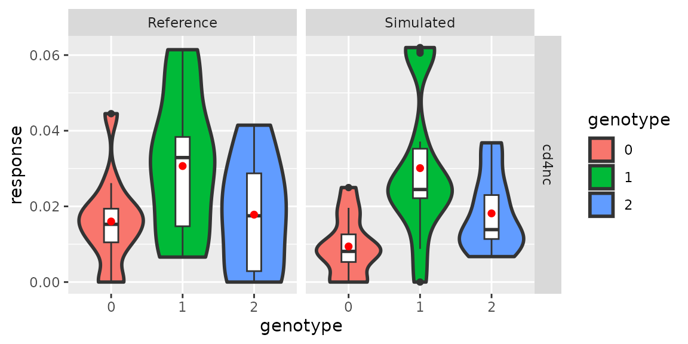

Modeling trans-eQTL effect using public data
Chris Dong
Department of Statistics and Data Science, University of California, Los Angelescycd@g.ucla.edu
Yihui Cen
Department of Computational Medicine, University of California, Los Angelesyihuicen@g.ucla.edu
28 May 2026
Source:vignettes/scDesignPop-trans-eQTL.Rmd
scDesignPop-trans-eQTL.RmdIntroduction
scDesignPop supports user-defined eQTL pairs, making it straightforward to extend the framework to trans-eQTL studies with known ground truth.
Library and data preparation
Here, we use an example trans-eQTL genotype dataframe
example_eqtlgeno_trans to demonstrate how scDesignPop can
also model trans-eQTL effects. Based on the trans-eQTL list from eQTLGen
phase 1 (https://www.eqtlgen.org/trans-eqtls.html), we
constructed a example genotype dataframe with permuted genotypes to show
how trans-eQTL effects can be preserved in scDesignPop simulation. The
download link of the full trans-eQTL list is https://download.gcc.rug.nl/downloads/eqtlgen/trans-eqtl/2018-09-04-trans-eQTLsFDR0.05-CohortInfoRemoved-BonferroniAdded.txt.gz.
library(scDesignPop)
library(SingleCellExperiment)
library(SummarizedExperiment)
library(ggplot2)
library(data.table)
data("example_sce")
data("example_eqtlgeno_trans")
example_sce
#> class: SingleCellExperiment
#> dim: 982 7998
#> metadata(0):
#> assays(1): counts
#> rownames(982): ENSG00000023902 ENSG00000028137 ... ENSG00000254709
#> ENSG00000273272
#> rowData names(0):
#> colnames(7998): Cell1 Cell2 ... Cell7997 Cell7998
#> colData names(5): indiv pool cell_type sex age
#> reducedDimNames(0):
#> mainExpName: NULL
#> altExpNames(0):
head(example_eqtlgeno_trans[,1:8])
#> # A tibble: 6 × 8
#> cell_type gene_id snp_id CHR POS SAMP1 SAMP2 SAMP3
#> <chr> <chr> <chr> <int> <int> <dbl> <dbl> <dbl>
#> 1 bulk ENSG00000159674 10:94450233 10 94450233 2 2 1
#> 2 bulk ENSG00000110077 2:182323766 2 182323766 2 1 1
#> 3 bulk ENSG00000117281 10:94450233 10 94450233 2 2 1
#> 4 bulk ENSG00000149557 10:94450233 10 94450233 2 2 1
#> 5 bulk ENSG00000006075 10:94450233 10 94450233 2 2 1
#> 6 bulk ENSG00000163453 10:94450233 10 94450233 2 2 1Modeling and simulation
Step 1: construct a data list
To run scDesignPop, a list of data is required as input. This is done
using the constructDataPop function. A
SingleCellExperiment object and an eqtlgeno
dataframe are the two main inputs needed. The eqtlgeno
dataframe consists of eQTL annotations (it must have cell state, gene,
SNP, chromosome, and position columns at a minimum), and genotypes
across individuals (columns) for every SNP (rows). Here, we use
example_sce to filter for overlapped genes in
example_eqtlgeno_trans object created
overlap_genes <- intersect(rownames(example_sce), example_eqtlgeno_trans$gene_id)
example_eqtlgeno_trans <- example_eqtlgeno_trans[which(example_eqtlgeno_trans$gene_id %in% overlap_genes), ]
example_sce <- example_sce[which(rownames(example_sce) %in% overlap_genes), ]
data_list <- constructDataPop(
sce = example_sce,
eqtlgeno_df = example_eqtlgeno_trans,
new_covariate = as.data.frame(colData(example_sce)),
copula_variable = "cell_type",
slot_name = "counts",
snp_mode = "single"
)Step 2: fit marginal model
Next, a marginal model is specified to fit each gene using the
fitMarginalPop function.
Here we use a Negative Binominal as the parametric model using
"nb".
marginal_list <- fitMarginalPop(
data_list = data_list,
mean_formula = "(1|indiv) + cell_type",
model_family = "nb",
interact_colnames = "cell_type",
parallelization = "parallel",
n_threads = 20L
)Step 3: fit a Gaussian copula
The third step is to fit a Gaussian copula using the
fitCopulaPop function.
set.seed(123, kind = "L'Ecuyer-CMRG")
copula_fit <- fitCopulaPop(
sce = example_sce,
assay_use = "counts",
input_data = data_list[["covariate"]],
marginal_list = marginal_list,
family_use = "nb",
copula = "gaussian",
n_cores = 2L,
parallelization = "parallel"
)
RNGkind("Mersenne-Twister") # resetStep 4: extract parameters
The fourth step is to compute the mean, sigma, and zero probability
parameters using the extractParaPop function.
para_new <- extractParaPop(
sce = example_sce,
assay_use = "counts",
marginal_list = marginal_list,
n_cores = 2L,
family_use = "nb",
new_covariate = data_list[["new_covariate"]],
new_eqtl_geno_list = data_list[["eqtl_geno_list"]],
data = data_list[["covariate"]],
parallelization = "parallel"
)Step 5: simulate counts
The fifth step is to simulate counts using the
simuNewPop function.
set.seed(123, kind = "L'Ecuyer-CMRG")
newcount_mat <- simuNewPop(
sce = example_sce,
mean_mat = para_new[["mean_mat"]],
sigma_mat = para_new[["sigma_mat"]],
zero_mat = para_new[["zero_mat"]],
copula_list = copula_fit[["copula_list"]],
n_cores = 2L,
family_use = "nb",
input_data = data_list[["covariate"]],
new_covariate = data_list[["new_covariate"]],
important_feature = copula_fit[["important_feature"]],
filtered_gene = data_list[["filtered_gene"]],
parallelization = "parallel"
)
RNGkind("Mersenne-Twister") # resetStep 6: create SingleCellExperiment object using simulated data
After simulating the data, we can create a
SingleCellExperiment object as follows.
simu_sce <- SingleCellExperiment(list(counts = newcount_mat),
colData = data_list[["new_covariate"]])
names(assays(simu_sce)) <- "counts"
rowData(simu_sce) <- rowData(example_sce)
simu_sce
#> class: SingleCellExperiment
#> dim: 27 7998
#> metadata(0):
#> assays(1): counts
#> rownames(27): ENSG00000117281 ENSG00000198574 ... ENSG00000100219
#> ENSG00000225783
#> rowData names(0):
#> colnames(7998): Cell1 Cell2 ... Cell7997 Cell7998
#> colData names(6): indiv pool ... age corr_group
#> reducedDimNames(0):
#> mainExpName: NULL
#> altExpNames(0):Create and visualize pseudobulk expression data
Next, we create pseudobulk data by normalizing the SCE object in the
data using log1p and then aggregate using
mean. We specify the gene at the trans-eQTL loci as well
using the createPbulkExprGeno function. Finally, we
visualize the pseudobulk expression for the gene at this loci.
res_list <- createPbulkExprGeno(sce_list = list("Reference" = example_sce,
"Simulated" = simu_sce),
eqtlgeno = example_eqtlgeno_trans,
feature_sel = "ENSG00000006075",
celltype_sel = "cd4nc",
eqtl_snp = "10:94450233",
normalize_type = "log1p",
aggregate_type = "mean",
slot_name = "logcounts",
overwrite = TRUE,
if_plot = TRUE)
res_list[["p_pbulk"]]
Session information
sessionInfo()
#> R version 4.2.3 (2023-03-15)
#> Platform: x86_64-pc-linux-gnu (64-bit)
#> Running under: Ubuntu 22.04.5 LTS
#>
#> Matrix products: default
#> BLAS: /usr/lib/x86_64-linux-gnu/openblas-pthread/libblas.so.3
#> LAPACK: /usr/lib/x86_64-linux-gnu/openblas-pthread/libopenblasp-r0.3.20.so
#>
#> locale:
#> [1] LC_CTYPE=en_US.UTF-8 LC_NUMERIC=C
#> [3] LC_TIME=en_US.UTF-8 LC_COLLATE=en_US.UTF-8
#> [5] LC_MONETARY=en_US.UTF-8 LC_MESSAGES=en_US.UTF-8
#> [7] LC_PAPER=en_US.UTF-8 LC_NAME=C
#> [9] LC_ADDRESS=C LC_TELEPHONE=C
#> [11] LC_MEASUREMENT=en_US.UTF-8 LC_IDENTIFICATION=C
#>
#> attached base packages:
#> [1] stats4 stats graphics grDevices utils datasets methods
#> [8] base
#>
#> other attached packages:
#> [1] data.table_1.17.4 ggplot2_3.5.2
#> [3] SingleCellExperiment_1.20.1 SummarizedExperiment_1.28.0
#> [5] Biobase_2.58.0 GenomicRanges_1.50.2
#> [7] GenomeInfoDb_1.34.9 IRanges_2.32.0
#> [9] S4Vectors_0.36.2 BiocGenerics_0.44.0
#> [11] MatrixGenerics_1.10.0 matrixStats_1.1.0
#> [13] scDesignPop_0.0.0.9012 BiocStyle_2.26.0
#>
#> loaded via a namespace (and not attached):
#> [1] tidyr_1.3.1 sass_0.4.10 jsonlite_2.0.0
#> [4] splines_4.2.3 bslib_0.9.0 assertthat_0.2.1
#> [7] BiocManager_1.30.25 GenomeInfoDbData_1.2.9 yaml_2.3.10
#> [10] numDeriv_2016.8-1.1 pillar_1.10.2 lattice_0.22-6
#> [13] glue_1.8.0 digest_0.6.37 RColorBrewer_1.1-3
#> [16] XVector_0.38.0 glmmTMB_1.1.9 minqa_1.2.8
#> [19] htmltools_0.5.8.1 Matrix_1.6-5 pkgconfig_2.0.3
#> [22] bookdown_0.43 zlibbioc_1.44.0 purrr_1.0.4
#> [25] mvtnorm_1.3-3 scales_1.4.0 lme4_1.1-35.3
#> [28] tibble_3.2.1 mgcv_1.9-1 generics_0.1.4
#> [31] farver_2.1.2 cachem_1.1.0 withr_3.0.2
#> [34] pbapply_1.7-2 TMB_1.9.11 cli_3.6.5
#> [37] magrittr_2.0.3 evaluate_1.0.3 fs_1.6.6
#> [40] nlme_3.1-164 MASS_7.3-58.2 textshaping_0.4.0
#> [43] tools_4.2.3 lifecycle_1.0.4 DelayedArray_0.24.0
#> [46] irlba_2.3.5.1 compiler_4.2.3 pkgdown_2.2.0
#> [49] jquerylib_0.1.4 systemfonts_1.2.3 rlang_1.1.6
#> [52] grid_4.2.3 RCurl_1.98-1.17 nloptr_2.2.1
#> [55] rstudioapi_0.17.1 htmlwidgets_1.6.4 labeling_0.4.3
#> [58] bitops_1.0-9 rmarkdown_2.27 boot_1.3-30
#> [61] gtable_0.3.6 R6_2.6.1 knitr_1.50
#> [64] dplyr_1.1.4 fastmap_1.2.0 uwot_0.2.3
#> [67] utf8_1.2.5 ragg_1.5.0 desc_1.4.3
#> [70] parallel_4.2.3 Rcpp_1.0.14 vctrs_0.6.5
#> [73] tidyselect_1.2.1 xfun_0.52